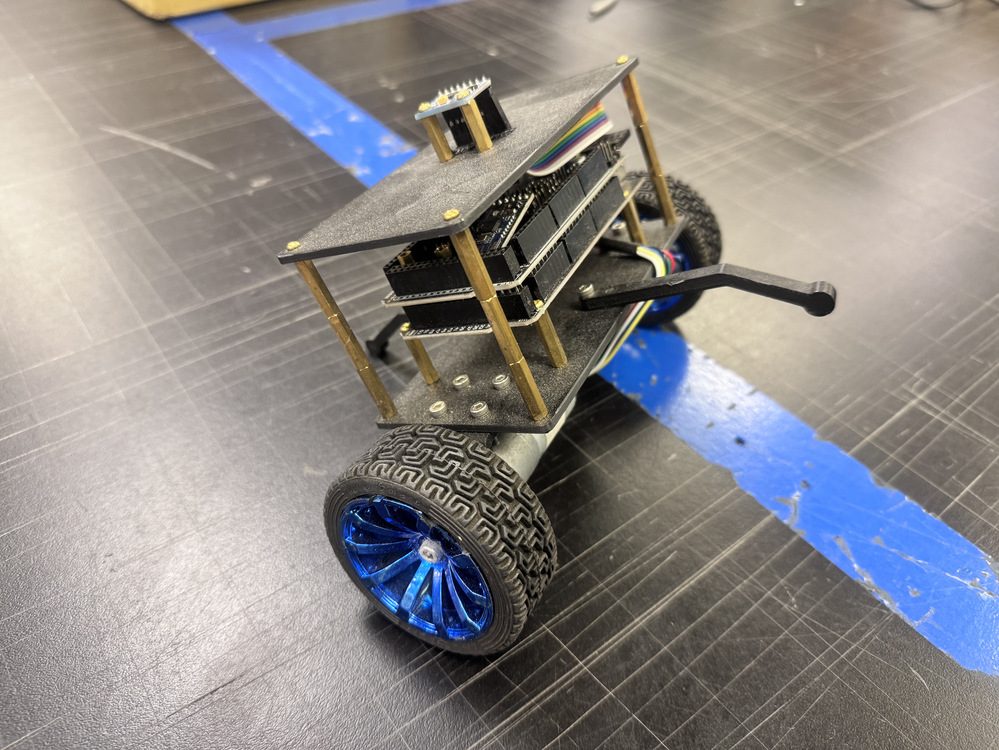
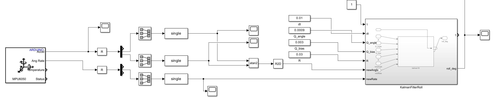
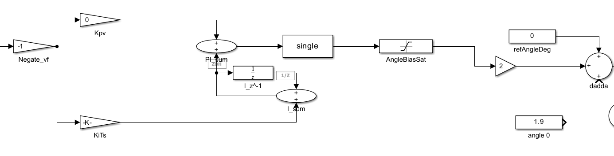
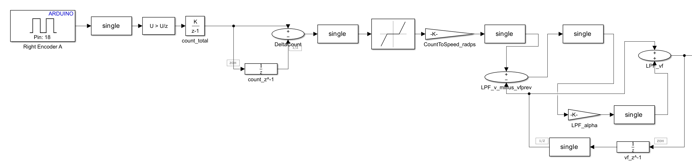
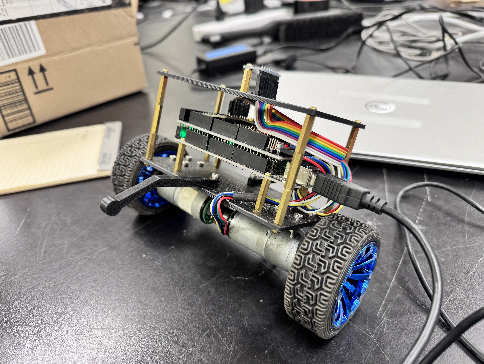

05 / Robotics / Controls
Self-Balancing Robot Control System
IMU sensor fusion and nested feedback control for a two-wheeled inverted-pendulum platform.
Using a provided two-wheeled inverted-pendulum platform, I developed and tuned the sensing, state-estimation, and feedback-control system for real-time stabilization. My work combined IMU sensor fusion, nested angle/speed control, encoder feedback, and onboard execution.
THE CHALLENGE
Control problem
A two-wheeled balancing robot behaves like an inverted pendulum: its upright equilibrium is unstable and requires continuous sensing and rapid corrective actuation.
The controller must estimate tilt and command the wheel motors quickly enough to resist falling. Noise, encoder disturbances, actuator nonlinearities, timing delays, and mechanical vibration made implementation as important as controller design.
SENSING / CONTROL / EMBEDDED DEPLOYMENT
My work
The chassis and mechanical platform were provided. I did not design, fabricate, or assemble the robot; my work focused on its control system.
- Implemented MPU6050 processing and the Kalman-filter tilt estimator.
- Developed and tuned the inner PD angle loop and outer PI wheel-speed loop.
- Implemented encoder processing, low-pass filtering, and tilt-dependent gating.
- Deployed the controller to the Arduino Mega and investigated host/USB response lag.
- Performed hardware testing and iterative control tuning.
CONTROL THEORY → IMPLEMENTATION → ITERATION
Control-system development
01 / HARDWARE CONTEXT
Provided test platform
The existing platform included an Arduino Mega 2560, MPU6050 IMU, two DC motors, wheel encoders, and a motor driver. These components provided the sensing and actuation paths used in the control work.
The two-wheeled geometry made tilt estimation, fast motor corrections, and reliable wheel-speed feedback central to testing.

02 / STATE ESTIMATION
Estimating tilt
Accelerometer-derived tilt is sensitive to motion and linear acceleration, while integrating gyroscope rate accumulates drift. I combined both MPU6050 signals in a one-dimensional Kalman filter to produce the roll-angle estimate used by the controller.
Accelerometer + gyroscope → Kalman filter → estimated tilt

03 / CONTROL ARCHITECTURE
Nested feedback control
Fast inner loop: angle
A discrete-time PD controller addresses the fast, unstable angular dynamics and commands corrective motor action.
Slower outer loop: speed
A PI controller regulates wheel speed by adjusting the inner-loop angle reference. Its bounded angle-bias output helps correct slow translational drift.
Wheel-speed error → PI → bounded angle bias → angle reference → PD → motor command

04 / ENCODER FEEDBACK
Wheel-speed estimation
Wheel-speed feedback was derived from discrete encoder-count differences. Quantization, vibration, and mechanical chatter produced noisy estimates, so I added low-pass filtering before feeding the slower speed-control loop.
Successive count differences over the sample period provide a count rate; conversion to wheel speed and filtering make that signal usable for feedback.

05 / PRACTICAL DEBUGGING
Dealing with real hardware
False speed estimates
When the robot was lifted, shaken, or vibrating, encoder feedback could indicate motion that did not represent useful ground velocity. The outer PI loop could then inject an inappropriate angle bias into the balancing controller.
Tilt-dependent gating
I added gating based on tilt angle so the speed controller would not influence the angle reference outside the useful balancing region. This reduced false speed-feedback influence during unstable conditions.
06 / REAL-TIME EXECUTION
Moving the control loop onto the microcontroller
Early tests ran the Simulink workflow on a host computer communicating with the Arduino over USB. This implementation showed noticeable response lag, reducing the controller's effectiveness on an unstable plant.
Deploying the control logic directly to the Arduino Mega substantially improved responsiveness by removing the host/USB path from the real-time feedback loop.
HOST EXECUTION
Sensor → Arduino → USB → PC / Simulink → USB → Arduino → motors
EMBEDDED EXECUTION
Sensor → Arduino control loop → motors

SYSTEM SUMMARY
Technical implementation
Control & modeling
Simulink, discrete-time feedback control, and nested PD / PI loops.
State estimation
MPU6050 accelerometer/gyroscope fusion and a 1D Kalman filter.
Embedded execution
Arduino Mega 2560 and Embedded Coder deployment.
Feedback processing
Wheel encoders, discrete speed estimation, low-pass filtering, and tilt-dependent gating.
OBSERVED RESULTS
Hardware testing
Testing produced brief periods of stable balance under controlled conditions. Introducing the outer speed-control loop improved slow-drift behavior compared with angle-only control.
Sustained balance remained limited by encoder noise, mechanical vibration and backlash, actuator nonlinearities, timing effects, and remaining tuning challenges. The testing video above documents the real platform's response.
ENGINEERING LESSONS
From control theory to real hardware
Sensor noise, quantization, encoder chatter, saturation, backlash, sample timing, and communication latency all changed controller behavior.
The project reinforced that a theoretically reasonable controller is a starting point. Signal conditioning, predictable execution timing, and the mechanical behavior of the plant are equally important to a working feedback system.